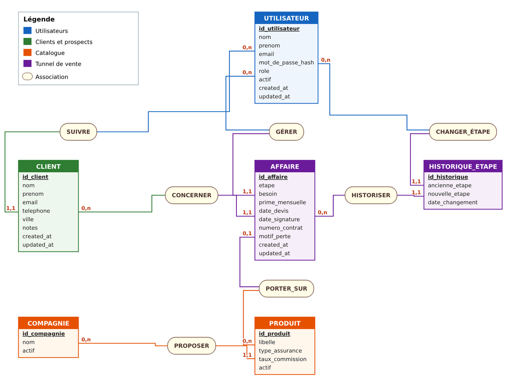

Support et mise à disposition de services informatiques
Dorian Pachot · IRIS MediaSchool Rouen
Mon parcours
Deux années de BTS, un stage, un projet en cours
Sept. 2025
Entrée en BTS SIO SLAM
1re année
Réseaux, systèmes, cybersécurité, développement
Févr. 2026
CRP-Assurance, site d'un client
Avril – août 2026
Stage chez Suitime : SYNCRO
Sept. 2026
Linux avancé, BDD avancées, Pla'Net
Oct. 2026
Application de gestion de cabinet
Avant le BTS : handball en National 1, puis la restauration, le management et le paysagisme.
Une reconversionStage à temps plein en juillet et août
Dorian Pachot · BTS SIO SLAM · Épreuve E52
Le tableau de synthèse
Un projet, deux applications, dix parties du travail
Application de gestion de cabinet (client CRP)
Patrimoine
Incidents et demandes
Présence en ligne
Mode projet
Mise à disposition
Dév. pro
Analyse du besoin, cahier des charges
●
●
Planification et suivi du projet
●
Demandes d'évolution du client
●
●
Développement : appli mobile, appli bureau, API
●
Habilitations : rôles et droits
●
●
Sécurité et RGPD
●
Serveur Docker et sauvegarde
●
●
Tests et recette avec le client
●
Accompagnement des utilisateurs
●
●
Veille et portfolio
●
Mes deux réalisations : l'application mobile des mandataires et l'application bureau du gérant, reliées à la même API et à la même base. Le tableau complet, avec les productions de chaque ligne, est en annexe.
Dorian Pachot · BTS SIO SLAM · Épreuve E53
Projet de deuxième année · client CRP
Une application de gestion pour les cabinets de courtage en assurance
Version 1 : le tunnel de vente · une application mobile, une application bureau, une base
Le besoin
Le problème : les ventes ne sont pas suivies
1
Prospects perdus de vueSans suivi, un prospect non relancé est un client perdu
2
Avancement des ventes inconnuLe gérant ne sait pas quelles ventes sont en cours, ni à quelle étape
3
Aucun indicateurNi taux de transformation, ni chiffre signé, ni commissions prévues
La problématique
Comment permettre à un cabinet de courtage de suivre chaque vente, du prospect au contrat signé, depuis le terrain comme depuis le bureau ?
MandataireCommission = prime × tauxPourquoi une version 1 réduite
Dorian Pachot · BTS SIO SLAM · Épreuve E55
Utilisateurs et fonctionnement
Deux rôles, une vente qui avance en 4 étapes
UserLe mandataire · application mobile
Gère ses propres prospects et clients, crée ses affaires, les fait avancer d'étape et consulte ses chiffres.
AdminLe gérant · application bureau
Crée les comptes, gère le catalogue (compagnies, produits, taux), voit toutes les affaires et le tableau de bord.
Prospectclient, besoin exprimé
Qualifiébesoin confirmé, produit visé
Devis envoyéproduit + prime obligatoires
Signén° de contrat + date obligatoires
Perdu possible depuis n'importe quelle étape · motif obligatoire
Chaque passage est enregistré (qui, quand). Une affaire signée ou perdue ne bouge plus.
Historique dans une transactionProspect = futur clientTaux de transformation
Dorian Pachot · BTS SIO SLAM · Épreuve E56
L'architecture
Deux applications, une seule API, une seule base
Réalisation 1 · Application mobileFlutter · Android · les mandataires
Réalisation 2 · Application bureauFlutter · Windows · le gérant
HTTPS JSON
Docker Compose
API Node.js (Express)vérifie le jeton, le rôle, la propriété · applique les règles du tunnel
SQL · requêtes préparées
MySQL · gestion_courtage6 tables
Seule l'API touche à la baseHTTPS et JSONJeton JWT
Dorian Pachot · BTS SIO SLAM · Épreuve E57
Réalisation 1
L'application mobile du mandataire
1Connexione-mail et mot de passe
2Mes prospects et clientscréer, modifier, rechercher
3Mes affaires par étapela liste du tunnel
4Détail d'une affairedevis, signature, perte
5Mes chiffresaffaires par étape, commissions estimées
Ce qu'elle utilise
Flutter, Android
API : /auth/clients/affaires/catalogue (lecture) /statistiques
Tables : client, affaire, historique_etape, produit
Le mandataire ne voit que ses propres clients et affaires.
Où en est le codeProviderUn passage d'étape refusé
Dorian Pachot · BTS SIO SLAM · Épreuve E58
Réalisation 2
L'application bureau du gérant
1Connexione-mail et mot de passe
2Comptes des mandatairescréer, désactiver
3Cataloguecompagnies, produits, taux de commission
4Toutes les affairesfiltres par étape et par mandataire, historique
5Tableau de bordtaux de transformation, primes, classement
Ce qu'elle utilise
Flutter, Windows
API : /auth/utilisateurs/catalogue/affaires/statistiques
Tables : les 6, dont utilisateur, compagnie et produit en écriture
Routes réservées à l'admin : un user reçoit 403.
Pourquoi deux applicationsDésactiver, pas supprimerLe tableau de bord
Dorian Pachot · BTS SIO SLAM · Épreuve E59
Les choix techniques
Chaque choix est justifié dans le cahier technique
Besoin
Choix
Pourquoi
Applications
Flutter (Dart), deux projets
Un seul langage pour le mobile et le bureau, déjà utilisé sur un projet précédent
Serveur (API)
Node.js et Express
Maîtrisé, minimaliste : tout est écrit explicitement
Base de données
MySQL 8
Données très liées : les clés étrangères gardent la cohérence
Exécution
Docker et Docker Compose
La base et l'API démarrent en une commande, sur n'importe quel poste
Versionnage
Git et GitHub
Historique du code et sauvegarde du travail
MySQL plutôt que MongoDBPourquoi ExpressLes outils
Dorian Pachot · BTS SIO SLAM · Épreuve E510
La base de données · le MCD
Six entités, sept associations

Les cardinalités à lire
SUIVRE utilisateur 0,n · client 1,1
CONCERNER client 0,n · affaire 1,1
GÉRER utilisateur 0,n · affaire 1,1
PORTER_SUR produit 0,n · affaire 0,1
PROPOSER compagnie 0,n · produit 1,1
HISTORISER affaire 0,n · historique 1,1
CHANGER_ÉTAPE utilisateur 0,n · historique 1,1
Dorian Pachot · BTS SIO SLAM · Épreuve E511
La base de données · le MLD
6 tables, reliées par des clés étrangères
utilisateurid_utilisateuremailmot_de_passe_hashrole admin / user